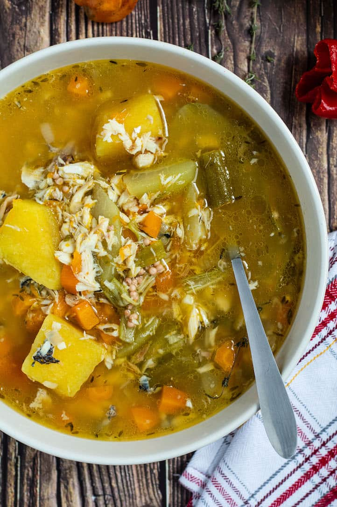

Fish Tea

Why is it called fish tea? It is because the soup bit (broth) is much
thinner than other types of Jamaican soups and usually contains fewer
ingredients. Also, according to us Jamaicans, tea is the remedy for every
sickness, and we drink fish tea soup when we have a cold/flu.
Ingredients
- 580 g (1.28 lb) Fresh fish
-
100 g (3.53 oz) Pumpkin Peeled and chopped cut into two inches pieces
-
240 g (8.47 oz) Yellow yam Peeled and chopped cut into two inches pieces
- 160 g Chocho (Chayote) Chopped
- 100 g (3.53 oz) Okra Chopped in two pieces
- 70 g (2.47 oz) Carrots Diced
- 40 g (1.41 oz) Onion Chopped
- 35 g (1.23 oz) Scallion Chopped
- 1 ½ tsp Salt Or to taste
- 2 Garlic cloves Finely chopped
- 3 Sprig thyme
- 1 Scotch bonnet pepper
- 5 Pimento berries (allspice)
- 1 pack Fish tea noodle mix
- 4½ Cups (1.06 l) Water
- Wash fish with vinegar, lemon and drain.
-
In a large soup pot, place the fish with 2½ cups of boiling water, the
onion, garlic, scallion and a tsp of salt.Put on medium heat and bring
to a boil.
-
Add the fish and cook for 10 to 15 minutes until the fish is soft.
- Once the fish cook, remove from the pot and debone the.
-
Add the carrot, yam, pumpkin, chocho (Chayote), thyme, pimento
(allspice), scotch bonnet pepper and more water to cover the food in the
pot – I had 2 cups of boiling water. Cover and bring to a boil.
-
If you wish, sieve the soup mix. Combine with four tablespoons of cold
water
-
Cover and leave to cook on medium to low heat for 30 to 35 minutes.
Halfway through, add the okra and the fish. At this point taste if the
soup is season to your liken.
-
Once the food in the pot is cooked, remove the scotch bonnet pepper and
thyme stems and serve.